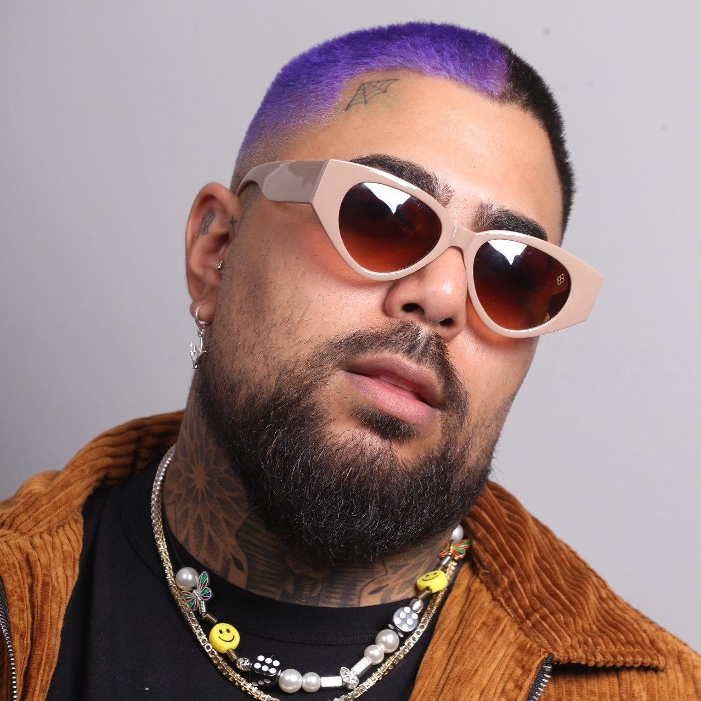

Matheus Sousa
@matheuss - 25 anos
Matheus Sousa é um dos brasileiros mais procurados pelos famosos. Começou sua vida empreendedora em uma sociedade firmada com Felipe Titto. Desde então, sua vida como empresário decolou. Virou barbeiro e cabelereiro profissional do artilheiro Gabigol, responsável pelo visual de Neymar, Pedro Scooby, Caio Castro, Lipe, Guilherme Araújo, entre outras referências da moda.